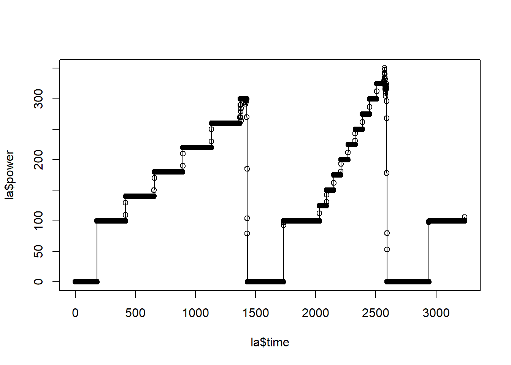
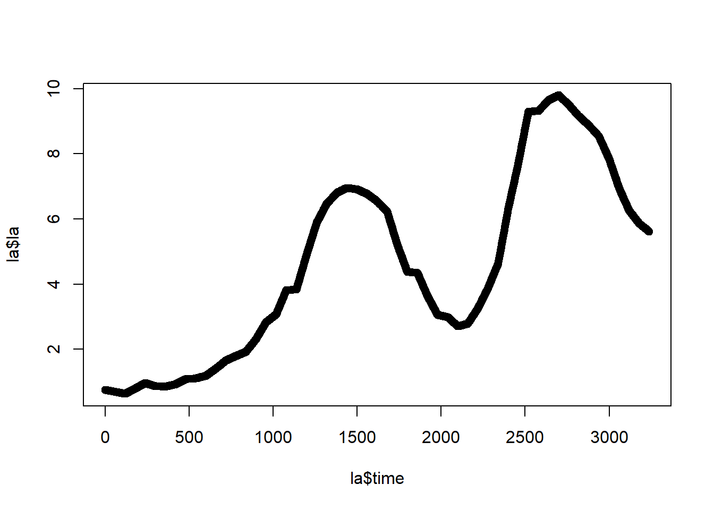
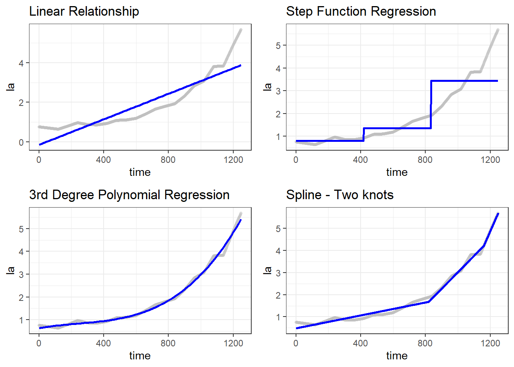
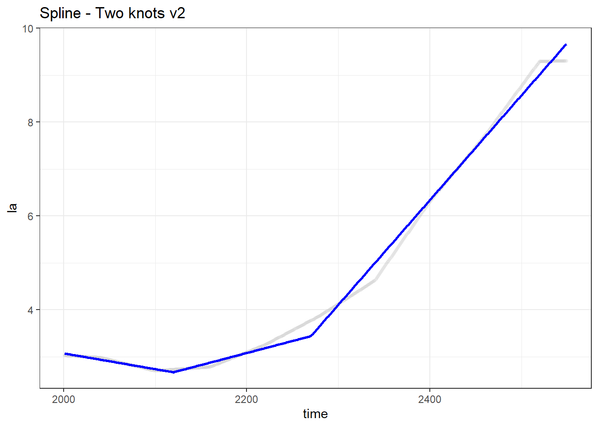
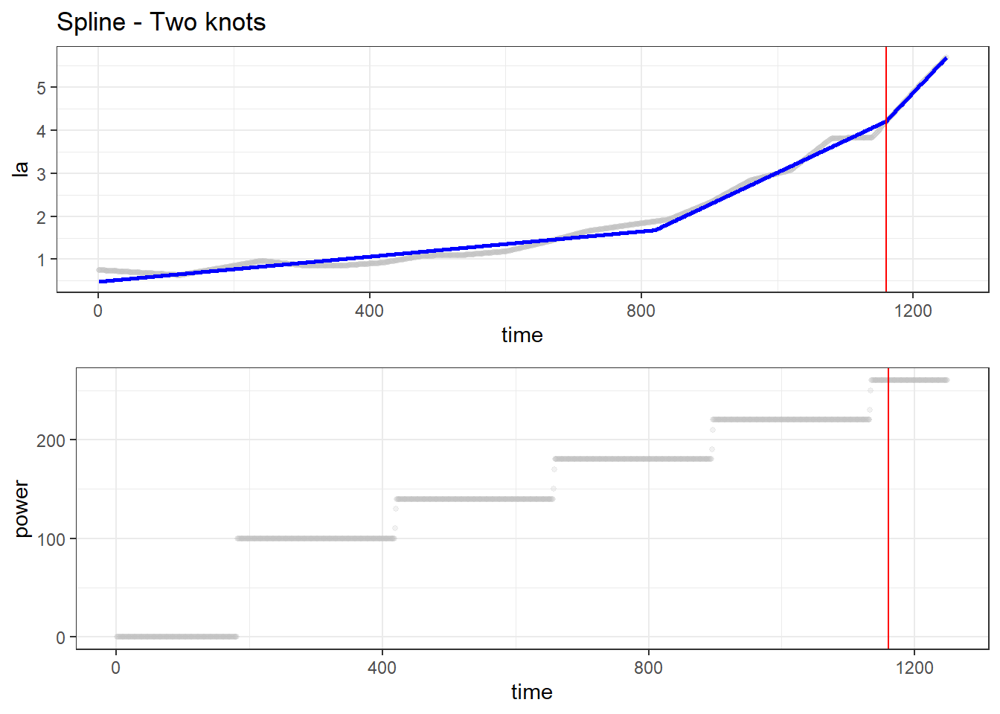
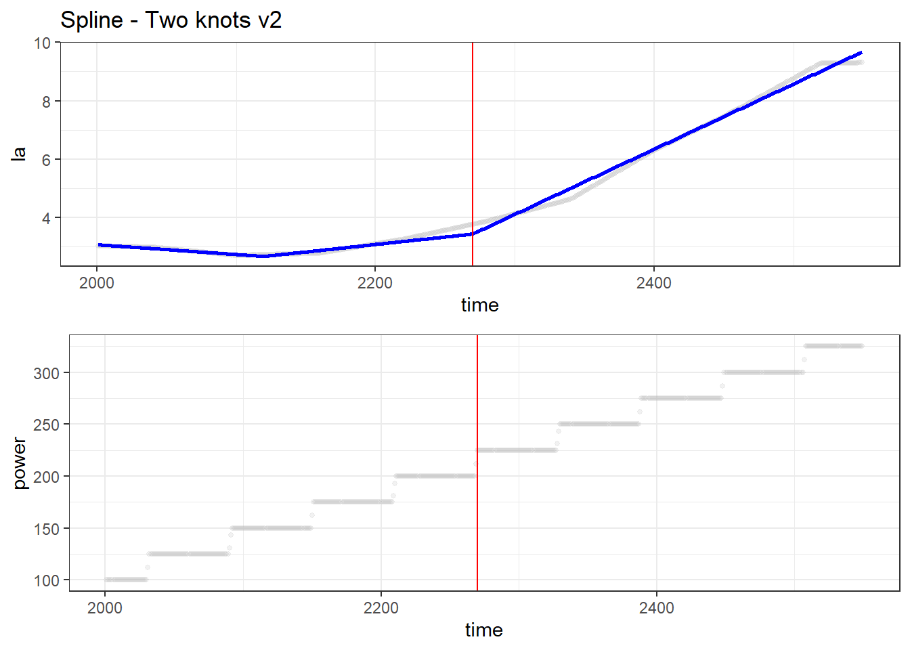

Modelling the Lactate Threshold
Lactate Threshold
The lactate threshold is located between the moderate/hard and extreme intensity zones. It is defined as the inflection point where lactate accumulates at greater rates than the body can utilize or remove.
This post does not provide an in-depth discussion of the lactate threshold. Rather, data was made available on Kaggle (here) and I looked identify where the athlete’s lactate threshold might be. This was achieved through different modelling strategies to try and identify the inflection point.
Loading Libraries and Data
Loading the Libraries
I tried modelling the lactate threshold using linear, step, exponential, and spline models. Most of the models were achieved using base R. Building splines requires the mda package.
The data can be downloaded the Kaggle using the link above. Otherwise, it can be sourced from my GitHub repository.
suppressMessages(library(tidyverse)) # for tidy code
suppressMessages(library(gridExtra)) # for tidy plotting
suppressMessages(library(mda)) # for spline models
We'll never share or sell your email address. By subscribing, you agree with Revue’s Terms of Service and Privacy Policy.
Loading the Data
Having already looked at the raw data, I noticed that variable names were not properly provided. I mitigated this issue by explicitly stating what the variable names should be while reading in the data.
url <- "https://github.com/aaronzpearson/midsprint-blog-data/raw/main/lactate-data.csv"
la <- read_csv(url,
col_names = c("time", "power", "vo2", "cadence", "la", "rf", "hr", "sat"),
col_types = cols())The Data Structure
head(la)# A tibble: 6 × 8
time power vo2 cadence la rf hr sat
<dbl> <dbl> <dbl> <dbl> <dbl> <dbl> <dbl> <dbl>
1 1 0 313. 0 0.749 18.4 52.5 99
2 2 0 214. 0 0.748 18.0 53 99
3 3 0 115. 0 0.747 17.5 53.5 99
4 4 0 15.5 0 0.746 17.0 54 99
5 5 0 248. 0 0.745 16.7 54 99
6 6 0 480. 0 0.744 16.5 54 99Exploratory Analyses
To get a sense of the data set, you can use the summary() function to return the min, max, median, mean, and quartiles.
summary(la) time power vo2 cadence
Min. : 1.0 Min. : 0.0 Min. : 15.53 Min. : 0.00
1st Qu.: 810.2 1st Qu.: 0.0 1st Qu.:1433.55 1st Qu.: 0.00
Median :1619.5 Median :100.0 Median :2139.25 Median : 94.00
Mean :1619.5 Mean :129.6 Mean :2140.88 Mean : 70.75
3rd Qu.:2428.8 3rd Qu.:220.0 3rd Qu.:2900.40 3rd Qu.: 97.00
Max. :3238.0 Max. :350.0 Max. :4788.30 Max. :112.00
la rf hr sat
Min. :0.630 Min. : 6.92 Min. : 49.0 Min. :94.00
1st Qu.:1.856 1st Qu.:21.08 1st Qu.:106.3 1st Qu.:96.00
Median :4.307 Median :24.25 Median :120.0 Median :97.00
Mean :4.593 Mean :24.90 Mean :121.0 Mean :96.98
3rd Qu.:6.804 3rd Qu.:27.55 3rd Qu.:145.7 3rd Qu.:98.00
Max. :9.790 Max. :75.48 Max. :177.0 Max. :99.00 Data Visualization
Exercise Test
Plotting power output versus time lets us see what type of threshold tests they ran.
plot(la$time, la$power) # use baseR for simpler code
lines(la$time, la$power) # no need for fancy graphics yet
Obviously, the researchers used different types or step tests. The first test is clearly an incremental step tests whereas, second test looks like it borders a graded, or gradual, exercise test.
Lactate Levels
We can also plot lactate levels over time to better understand the athlete’s response to increasing power outputs.
plot(la$time, la$la)
Since the data is continuous, it seems like lactate levels were continuously sampled.
Modelling Approaches
The models we are going to use are: linear, step, polynomial, and spline.
Firstly, we need to manually separate the tests.
la1 <- filter(la, time < 1250) # separate tests
la2 <- filter(la, time > 2000, time < 2550)Fitting the 1st Test
Below, we fit the first test using our pre-chosen model:
# linear regression
fit1 <- lm(la ~ time, la1)
# step
fit2 <- lm(la ~ cut(time, 3), la1) # 3 cuts for 2 thresholds (ideally)
# polynomial
fit3 <- lm(la ~ time + poly(time, 3), la1)
# spline
fit4 <- mda::mars(la1$time, la1$la, nk = 5) # nk = 5 results in 2 cutsWe can then visualize the model fits:
Code
theme_set(theme_bw()) # set the global ggplot2 theme
# linear regression
p1 <- ggplot(la1, aes(time, la)) +
geom_point(size = 1, alpha = .2, colour = "grey") +
geom_smooth(method = "lm", se = FALSE, formula = y ~ x, color = "blue") +
ggtitle("Linear Relationship")
# step
step_pred <- predict(fit2, la1)
p2 <- ggplot(cbind(la1, step_pred), aes(time, la)) +
geom_point(size = 1, alpha = .2, colour = "grey") +
geom_line(aes(y = step_pred), size = 1, color = "blue") +
ggtitle("Step Function Regression")
# polynomial
p3 <- ggplot(la1, aes(time, la)) +
geom_point(size = 1, alpha = .2, colour = "grey") +
stat_smooth( method = "lm", se = FALSE, formula = y ~ poly(x, 3, raw = TRUE), color = "blue") +
ggtitle("3rd Degree Polynomial Regression")
# spline
p4 <- la1 %>%
mutate(predicted = as.vector(fit4$fitted.values)) %>%
ggplot(aes(time, la)) +
geom_point(size = 1, alpha = .2, colour = "grey") +
geom_line(aes(y = predicted), size = 1, color = "blue") +
ggtitle("Spline - Two knots")
# output
gridExtra::grid.arrange(p1, p2, p3, p4, nrow = 2)
Initial Model Fit
Although some models have better fit (ex: RMSE), we want to locate the inflection point. Visually, it looks like the spline fit is probably our best approach.
Next, we need to find the time-point at which the second inflection point occurs. With this information, we can identify the athlete’s power output at that time-point. The power output will then line-up with the athlete’s lactate threshold.
Finding the Spline Cuts
The largest value is where the second inflection point, or node, is located.
spline_cuts <- fit4$cuts # find the cuts
spline_cuts [,1]
[1,] 0
[2,] 820
[3,] 820
[4,] 1160
[5,] 1160Filtering for this time point results in the following. We see that an output of 260 W corresponds with this athlete’s lactate threshold of 4.18 mmol/L. This power output is also referred to as the athlete’s critical power.
filter(la1, time == max(spline_cuts))# A tibble: 1 × 8
time power vo2 cadence la rf hr sat
<dbl> <dbl> <dbl> <dbl> <dbl> <dbl> <dbl> <dbl>
1 1160 260 1974 92 4.18 23.9 151 98Visualizing La Threshold and Critical Power
Code
p4 <- p4 +
geom_vline(aes(xintercept = 1160), colour = "red")
p4_1 <- ggplot(la1, aes(x = time, y = power)) +
geom_point(size = 1, alpha = 0.2, colour = "grey") +
geom_vline(aes(xintercept = 1160), colour = "red")
gridExtra::grid.arrange(p4, p4_1)
Fitting the 2nd Test
We’ll gloss over the steps above and just return the results.
For the second test, the athlete’s lactate threshold drops to 3.77 mmol/L and critical power to 225 W.
fit5 <- mda::mars(la2$time, la2$la, nk = 5)
spline_cuts <- fit5$cuts # find the cuts
filter(la2, time == max(spline_cuts))# A tibble: 1 × 8
time power vo2 cadence la rf hr sat
<dbl> <dbl> <dbl> <dbl> <dbl> <dbl> <dbl> <dbl>
1 2270 225 2697. 96 3.77 25.4 146 95The resulting plot fit is slightly different. Intuitively, this makes sense because the athlete has already undergone a lactate threshold test and probably still has accumulated lactate in their system.
Code
p5 <- la2 %>%
mutate(predicted = as.vector(fit5$fitted.values)) %>%
ggplot(aes(time, la)) +
geom_point(size = 1, alpha = .2, colour = "grey") +
geom_line(aes(y = predicted), size = 1, color = "blue") +
ggtitle("Spline - Two knots v2")
p5
Final Visualization
This plots below repeat those from above. They provide a little more information as to where the athlete’s critical power resides between the two testing methods.
Code
# 1st vs 2nd exercise test
p5 <- p5 +
geom_vline(aes(xintercept = 2270), colour = "red")
p5_1 <- ggplot(la2, aes(x = time, y = power)) +
geom_point(size = 1, alpha = 0.2, colour = "grey") +
geom_vline(aes(xintercept = 2270), colour = "red")
gridExtra::grid.arrange(p4, p4_1)
Code
gridExtra::grid.arrange(p5, p5_1)
We'll never share or sell your email address. By subscribing, you agree with Revue’s Terms of Service and Privacy Policy.